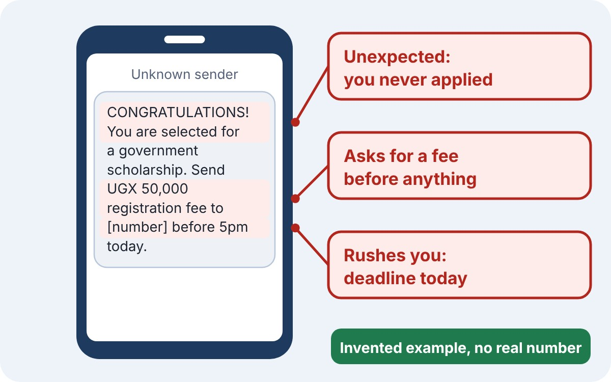
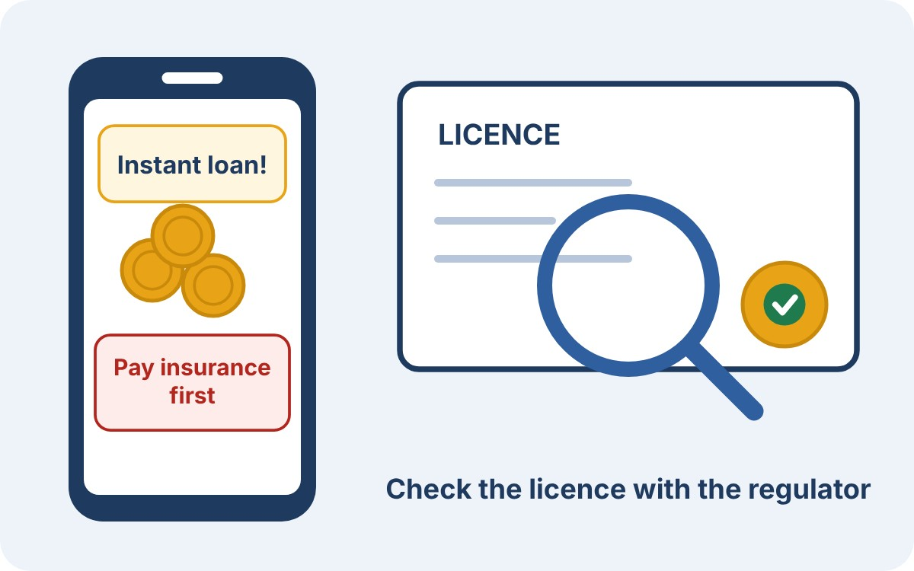

Know the scams
Offers that ask for money first are the biggest warning sign. Learn how the common ones work.
Fake jobs and scholarships
How the scam works, and how to tell it from a real opportunity.

How it usually works
- Contact. A call, SMS, WhatsApp message or social media advert says you have been picked for a job or scholarship.
- It sounds official. The sender claims to be from a ministry, a company, an NGO or a well-known politician.
- The fee. You must pay a “registration”, “medical” or “processing” fee by mobile money.
- Pressure. You are told the slot will go to someone else unless you pay today.
- Silence or more demands. The sender disappears, or invents a new fee.
This is exactly what happened in the 2026 court case: fake government jobs and scholarships, paid for through mobile money [1].
Invented examples
These messages are made up for teaching. They use no real numbers or names.
CONGRATULATIONS! You are selected for a government scholarship. Send UGX 50,000 registration fee to [number] before 5pm today to secure your slot.
Hiring now: office assistant, UGX 900,000 per month. No experience needed. Pay UGX 30,000 uniform and medical fee to start Monday.
Red flags
- You never applied, yet you were “selected”.
- You must pay before you start or before any interview.
- Payment goes to a personal mobile money number.
- The message is full of urgency, capital letters and big promises.
What real recruiters do. They interview you, give you a written offer, and do not charge you to be hired. Look the organisation up yourself and call the number on its official website, not the number in the message. UCC advises checking any offer that asks for money upfront [1].
Fake loans and investments
Quick loans and “double your money” offers that take your fee and vanish.

Fake loans
You are offered an easy loan, then told to pay “insurance”, “clearance” or “processing” first. The loan never arrives. Others lend through apps and then misuse your phone data. In August 2024 the Uganda Microfinance Regulatory Authority (UMRA) published a list of unauthorised loan apps and warned the public about them [5].
Check the lender. Lenders in this category must be licensed by UMRA under the Tier 4 Microfinance Institutions and Money Lenders Act, 2016. Ask for the licence, then confirm it with UMRA yourself [5].
Fake investments
These promise fast, fixed returns, often with a story such as farming or trading. Early members get paid from new members’ money until the scheme collapses.
The Capital Markets Authority (CMA) warned the public in 2023 about one such scheme, Veta Plan Chicken, which it said was not approved. In 2025 the CMA reported that more than UGX 757 million had been collected from the public, and that suspects had been arrested [6].
Red flags
- Guaranteed or very high returns.
- You are asked to bring in friends to earn more.
- You are rushed or told to keep it quiet.
- The company cannot show a licence, or the regulator has never heard of it.
The CMA keeps a list of approved investment advisers and service providers on its website [6].